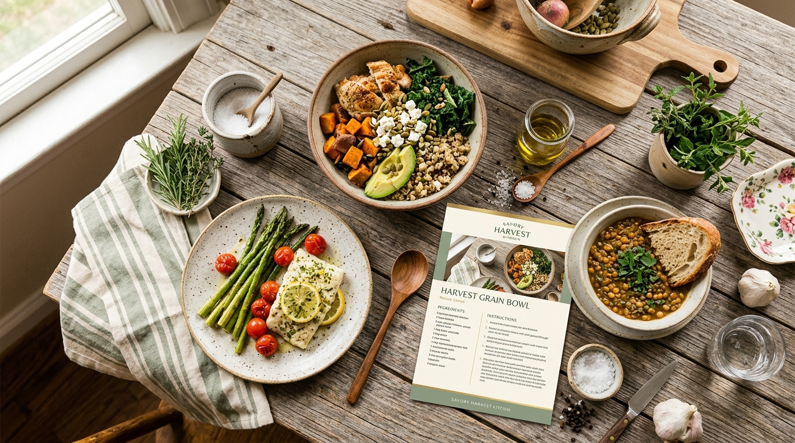

Halo, saya Galih
Widi Sefty Galih Khofifah
Pelajar SMK Negeri Tembarak — Rekayasa Perangkat Lunak
Saya adalah seorang pelajar SMK yang sedang menempuh pendidikan di bidang Rekayasa Perangkat Lunak. Saya memiliki kepribadian mandiri, disiplin, dan bertanggung jawab. Selain tertarik pada dunia teknologi, saya juga memiliki minat dalam bidang memasak.
Tentang Saya
Mengenal lebih dekat identitas dan kepribadian saya sebagai pelajar SMK Negeri Tembarak.
Identitas Diri
Karakter & Etos Diri
"Saya merupakan pribadi yang mandiri, disiplin, dan bertanggung jawab dalam menjalankan tugas maupun kegiatan. Saya berusaha menyelesaikan setiap pekerjaan dengan baik serta mampu menyesuaikan diri ketika bekerja bersama orang lain. Saya juga senang mempelajari hal-hal baru untuk menambah pengalaman dan kemampuan."
Pendidikan
Perjalanan akademis dan jenjang kejuruan yang sedang saya jalani.
SMK Negeri Tembarak
Saat ini saya sedang menempuh pendidikan di SMK Negeri Tembarak pada jurusan Rekayasa Perangkat Lunak (RPL). Dalam pendidikan ini saya mempelajari berbagai dasar dan keterampilan yang berkaitan dengan teknologi, pemrograman, serta pengembangan perangkat lunak. Pendidikan ini membantu saya mengembangkan kemampuan berpikir logis, kreativitas, kedisiplinan, dan kerja sama tim.
Keahlian Saya
Kemampuan utama yang saya asah melalui pembelajaran dan kegiatan kelompok.
Kerja Sama Tim
Kolaborasi Positif & Produktif
Mampu bekerja sama dengan anggota tim, berdiskusi, berbagi tugas, dan berusaha menyelesaikan pekerjaan bersama untuk mencapai tujuan yang telah ditentukan.
Berdiskusi Terbuka
Aktif bertukar gagasan, mendengarkan pendapat rekan kelompok, dan mencari solusi terbaik bersama.
Pembagian Tugas
Membagi peranan secara adil dan fokus menuntaskan bagian tugas dengan penuh dedikasi.
Tujuan Bersama
Mengutamakan keberhasilan kelompok agar setiap proyek selesai tepat waktu dan memuaskan.
Karakter & Kepribadian
Tiga nilai utama yang saya pegang teguh dalam belajar dan beraktivitas sehari-hari.
Mandiri
Mampu berusaha menyelesaikan tugas dan menghadapi tanggung jawab dengan kemampuan sendiri.
Disiplin
Berusaha menghargai waktu, menaati aturan, dan menyelesaikan tugas sesuai dengan tanggung jawab.
Bertanggung Jawab
Berusaha menyelesaikan setiap tugas dan kewajiban dengan sungguh-sungguh serta siap menerima hasil dari tindakan yang dilakukan.
Pengalaman & Kegiatan
Pengalaman berharga yang melatih mentalitas, fisik, sportivitas, dan kepemimpinan.
Lomba Olahraga
Tempat: SMP
Mengikuti berbagai kegiatan dan lomba olahraga selama masa pendidikan di SMP pada periode 2023–2025. Kegiatan ini memberikan pengalaman dalam berkompetisi, melatih kedisiplinan, membangun semangat sportif, dan meningkatkan kemampuan bekerja sama.
Pramuka
Kegiatan: Pramuka Cabang Daerah
Mengikuti kegiatan Pramuka cabang daerah yang memberikan pengalaman dalam kedisiplinan, kerja sama, tanggung jawab, kemandirian, serta kemampuan beradaptasi dalam berbagai kegiatan.
Proyek Saya
Kolaborasi harmonis antara keahlian Rekayasa Perangkat Lunak dan minat dalam seni kuliner.

Galih's Recipe — Website Resep Masakan
Galih's Recipe adalah konsep website sederhana yang dibuat untuk menyimpan dan menampilkan berbagai resep masakan. Website ini dibuat sebagai proyek pembelajaran yang menggabungkan minat dalam memasak dengan pengetahuan dasar Rekayasa Perangkat Lunak.
Fitur-Fitur Utama Proyek:
- ✓ Daftar resep masakan
- ✓ Foto makanan menarik
- ✓ Nama masakan lengkap
- ✓ Daftar bahan-bahan
- ✓ Langkah-langkah memasak runtut
- ✓ Kategori makanan terstruktur
- ✓ Fitur pencarian resep
- ✓ Tampilan responsif HP & laptop
Minat Saya
Aktivitas menyenangkan yang menumbuhkan kreativitas dan kesabaran.
Seni Memasak
Saya memiliki minat dalam memasak dan senang mencoba membuat berbagai jenis makanan. Memasak menjadi salah satu kegiatan yang saya sukai karena dapat melatih kreativitas, ketelitian, kesabaran, dan kemampuan untuk mencoba hal-hal baru.
Bidang yang Ditekuni
Dua pilar keahlian dan minat yang sedang saya kembangkan secara beriringan.
Rekayasa Perangkat Lunak
Bidang pendidikan yang sedang saya jalani di SMK Negeri Tembarak. Saya mempelajari dasar-dasar teknologi dan pengembangan perangkat lunak.
Memasak
Bidang minat yang saya sukai dan terus saya eksplorasi untuk meningkatkan kreativitas dan keterampilan.